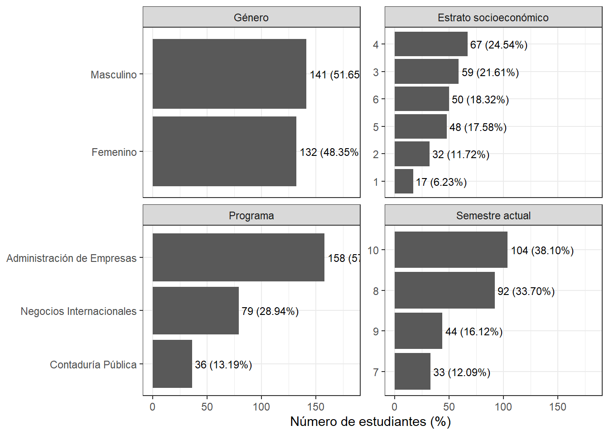
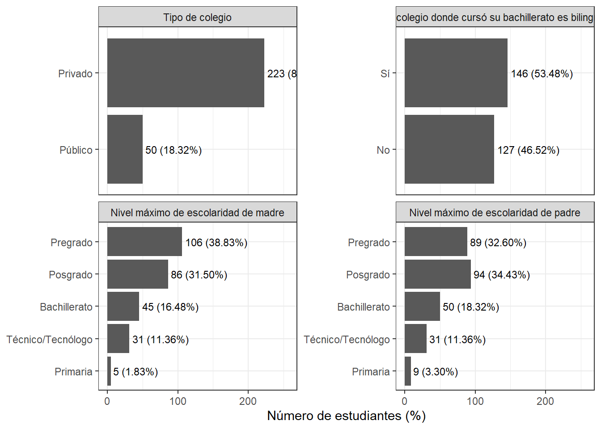
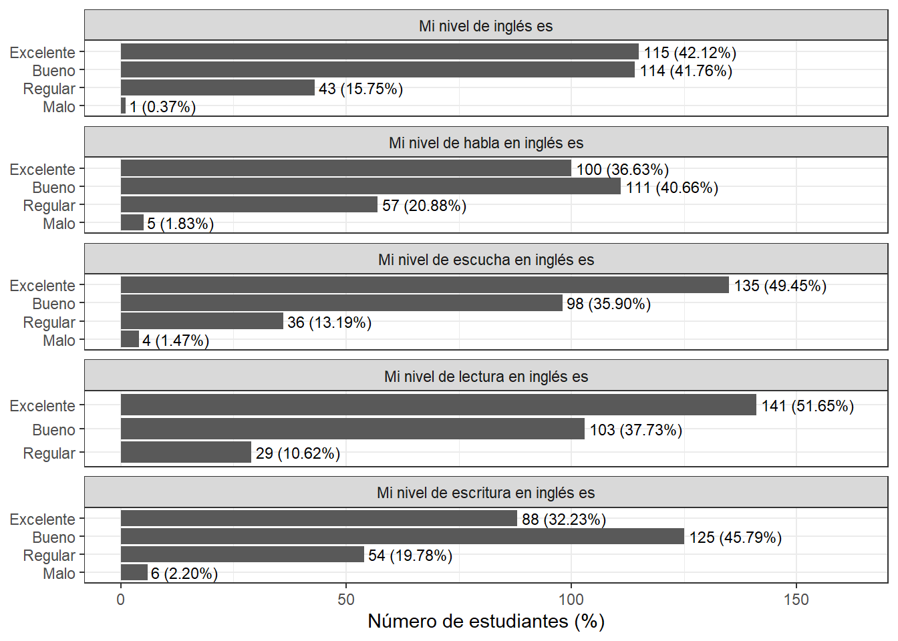
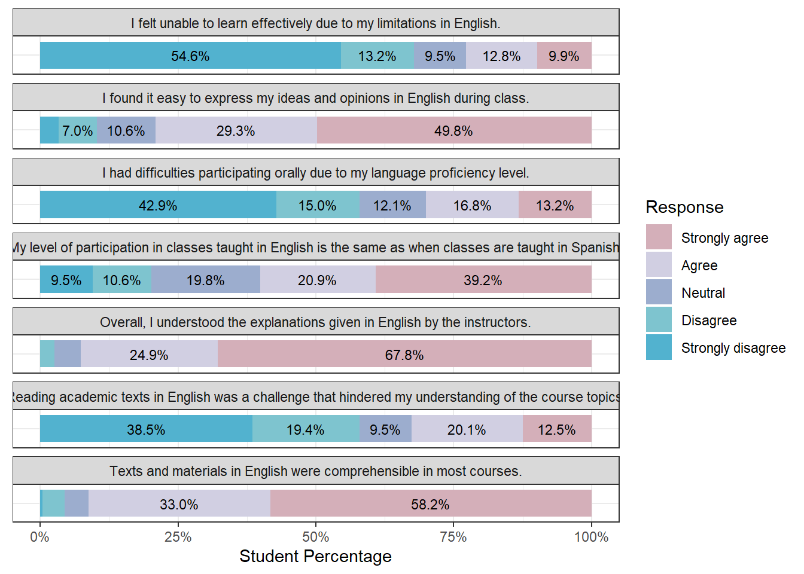
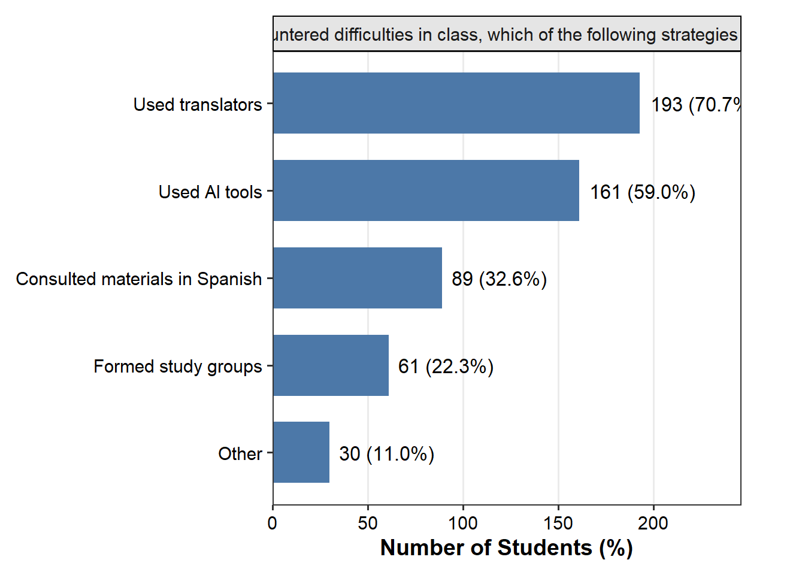
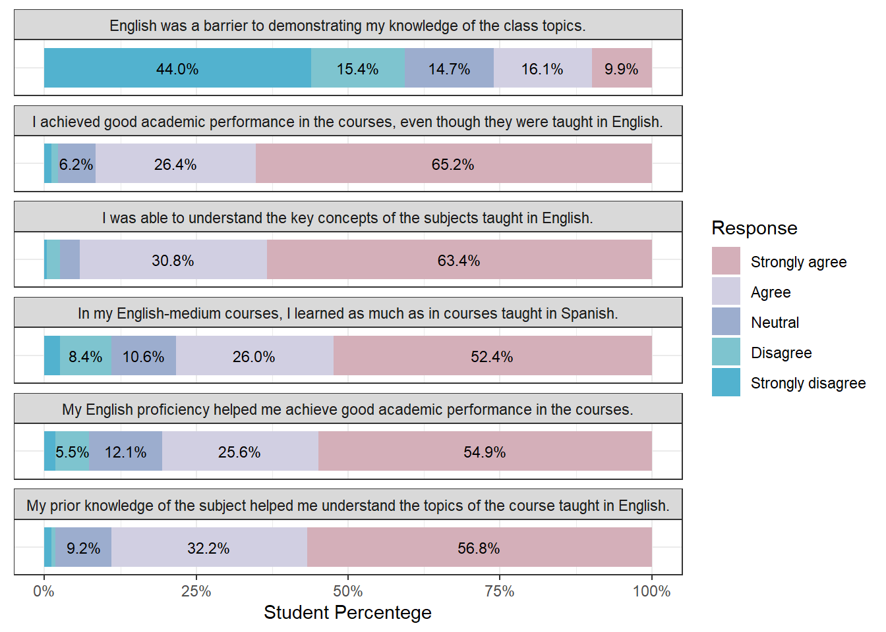
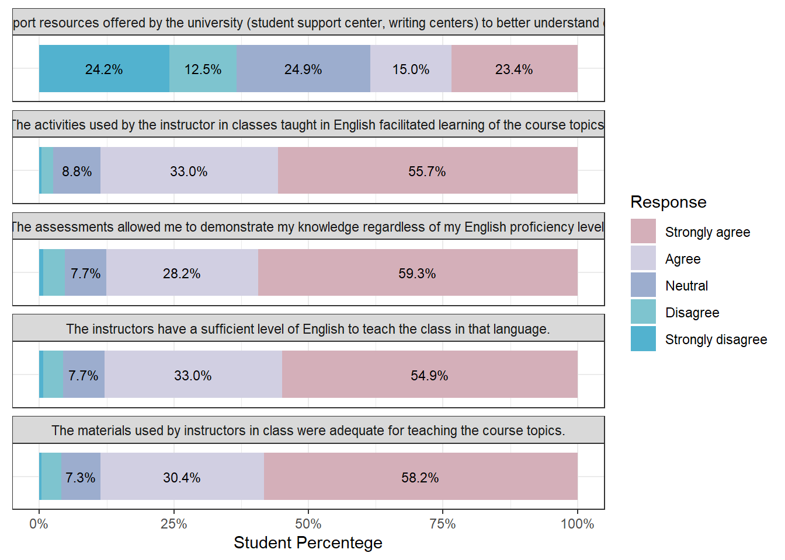
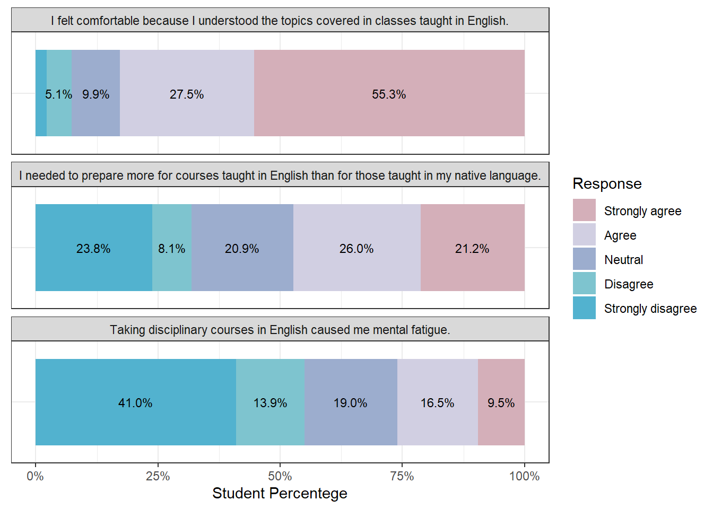
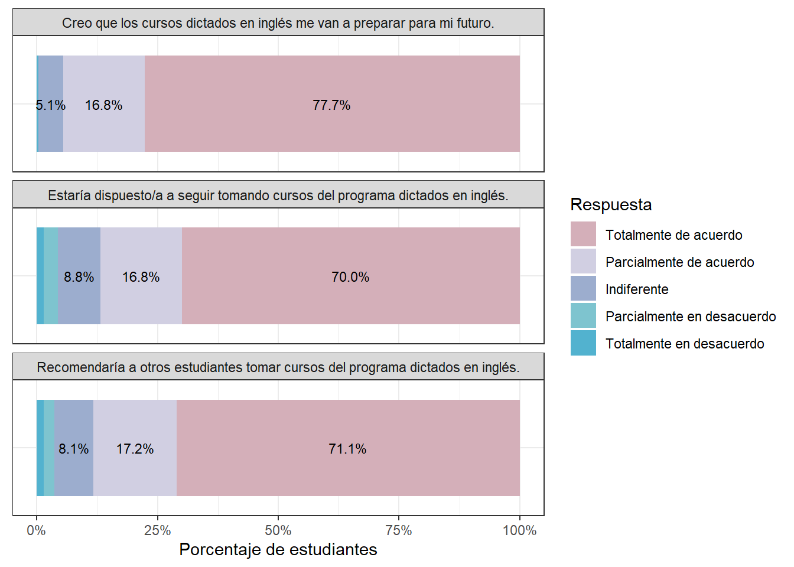
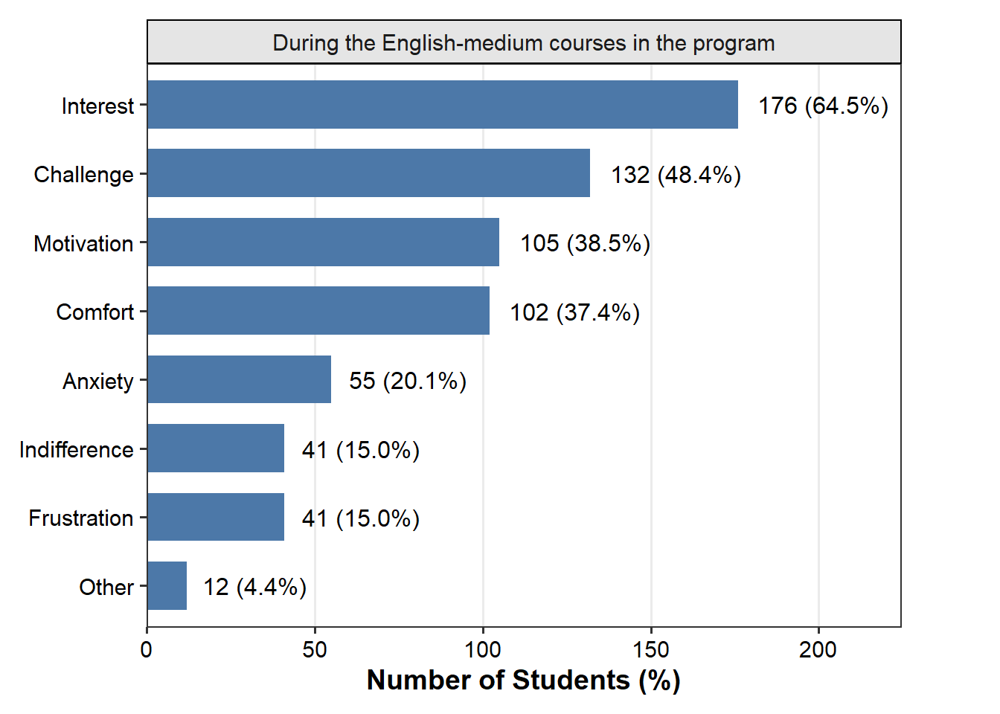

Capítulo 3 Análisis exploratorio
3.1 Análisis de las variables sociodemográficas
| n | prom | ds | mediana | q1 | q3 | edad_min | edad_max |
|---|---|---|---|---|---|---|---|
| 273 | 22.81 | 1.36 | 23 | 22 | 23 | 20 | 28 |
En este estudio se recolectaron datos mediante un cuestionario en línea para caracterizar a los participantes y contextualizar los análisis posteriores. Un total de 273 estudiantes completó el cuestionario. Para el análisis descriptivo de la edad, se excluyeron 3 registros por datos faltantes, por lo que se contó con 270 estudiantes. La edad de los participantes presentó un promedio de 22.81 años (DE = 1.36 años), donde el \(50\%\) de los participates tiene edad menor o igual 23 años. Además, las edades oscilaron entre 20 y 28 años (ver Tabla \@ref(tab:edadnum)).
| Variable | n | faltantes | pct_faltantes |
|---|---|---|---|
| Género | 273 | 0 | 0 |
| Estrato socioeconómico | 273 | 0 | 0 |
| Programa | 273 | 0 | 0 |
| Semestre actual | 273 | 0 | 0 |
En relación con la calidad de los datos para las variables sociodemográficas analizadas (Género, Estrato socioeconómico, y Semestre actual), no se identificaron valores faltantes (0 casos; 0% de datos perdidos). Esto evidencia una completitud total en estas variables, lo que permite realizar los análisis descriptivos posteriores sin necesidad de imputación o exclusión de casos por ausencia de información.
| Variable | Categoría | n | porcentaje |
|---|---|---|---|
| Género | Masculino | 141 | 51.65 |
| Género | Femenino | 132 | 48.35 |
| Estrato socioeconómico | 1 | 17 | 6.23 |
| Estrato socioeconómico | 2 | 32 | 11.72 |
| Estrato socioeconómico | 3 | 59 | 21.61 |
| Estrato socioeconómico | 4 | 67 | 24.54 |
| Estrato socioeconómico | 5 | 48 | 17.58 |
| Estrato socioeconómico | 6 | 50 | 18.32 |
| Programa | Administración de Empresas | 158 | 57.88 |
| Programa | Negocios Internacionales | 79 | 28.94 |
| Programa | Contaduría Pública | 36 | 13.19 |
| Semestre actual | 7 | 33 | 12.09 |
| Semestre actual | 8 | 92 | 33.70 |
| Semestre actual | 9 | 44 | 16.12 |
| Semestre actual | 10 | 104 | 38.10 |
Los participantes fueron estudiantes de pregrado matriculados en tres programas académicos: Administración de Empresas (158; 57.88%), Negocios Internacionales (79; 28.94%) y Contaduría Pública (36; 13.19%). El semestre cursado osciló entre séptimo y décimo, con una mayor proporción de estudiantes en décimo semestre (104; 38.1%) y octavo semestre (92; 33.7%). En cuanto al género, 132 (48.35%) participantes se identificaron como femenino y 141 (51.65%) como masculino. En términos socioeconómicos, la distribución se concentró en los estratos 4 (67; 24.54%) y 3 (59; 21.61%), seguidos por los estratos 6, 5, 2 y 1 (ver Tabla \@ref(tab:sociodemo)).

Cabe resaltar que las conclusiones serán parecedas o las mismas que las de la tabla.
3.2 Análisis de las variables de antecedentes educativos
Ahora, veamos el análisis de las variables de antecedentes educativos.
| Variable | n | faltantes | pct_faltantes |
|---|---|---|---|
| Tipo de colegio | 273 | 0 | 0 |
| El colegio donde cursó su bachillerato es bilingüe | 273 | 0 | 0 |
| Nivel máximo de escolaridad de madre | 273 | 0 | 0 |
| Nivel máximo de escolaridad de padre | 273 | 0 | 0 |
En relación con la calidad de los datos para las variables de antecedentes educativos, no se identificaron valores faltantes (0 casos; 0% de datos perdidos). Esto demuestra una completitud de los datos, lo que permite realizar los análisis sin necesidad de imputación o exclusión de casos por ausencia de información.
| Variable | Categoría | n | porcentaje |
|---|---|---|---|
| Tipo de colegio | Privado | 223 | 81.68 |
| Tipo de colegio | Público | 50 | 18.32 |
| El colegio donde cursó su bachillerato es bilingüe | Sí | 146 | 53.48 |
| El colegio donde cursó su bachillerato es bilingüe | No | 127 | 46.52 |
| Nivel máximo de escolaridad de madre | Pregrado | 106 | 38.83 |
| Nivel máximo de escolaridad de madre | Posgrado | 86 | 31.50 |
| Nivel máximo de escolaridad de madre | Bachillerato | 45 | 16.48 |
| Nivel máximo de escolaridad de madre | Técnico/Tecnólogo | 31 | 11.36 |
| Nivel máximo de escolaridad de madre | Primaria | 5 | 1.83 |
| Nivel máximo de escolaridad de padre | Posgrado | 94 | 34.43 |
| Nivel máximo de escolaridad de padre | Pregrado | 89 | 32.60 |
| Nivel máximo de escolaridad de padre | Bachillerato | 50 | 18.32 |
| Nivel máximo de escolaridad de padre | Técnico/Tecnólogo | 31 | 11.36 |
| Nivel máximo de escolaridad de padre | Primaria | 9 | 3.30 |
La mayoría de los estudiantes provenía de colegios privados (223; 81.68%) y 146 reportó haber cursado el bachillerato en un colegio bilingüe (53.48%). En cuanto al capital educativo del hogar, la escolaridad máxima reportada para la madre se concentró en Pregrado (106; 38.83%), mientras que para el padre predominó Posgrado (94; 34.43%) (Ver Tabla 3.5).

Las interpretaciones son similares a las de la tabla.
3.3 Análisis del perfil lingüistico
El análisis exploratorio del perfil lingüístico del estudiante tiene como objetivo descubrir, explicar y comprender de manera integral aquellos rasgos asociados con las competencias comunicativas en su lectura y escritura, así como su dominio de uno o más idiomas mientras desarrollan tanto sus habilidades discursivas, en el ámbito académico como en el entorno casual. Esto implica analizar diversas características, incluyendo la comprensión lectora, la coherencia y cohesión textual, la riqueza léxica, la capacidad argumentativa y la expresión oral para adquirir una imagen general y organizada de su logro lingüístico. Estos datos tienen el potencial de informar sobre fortalezas, debilidades y patrones de comportamiento comunicativo para diseñar estrategias pedagógicas más efectivas, personalizadas y basadas en evidencia.
| Variable | n | faltantes | pct_faltantes |
|---|---|---|---|
| Mi nivel de inglés es | 273 | 0 | 0 |
| Mi nivel de habla en inglés es | 273 | 0 | 0 |
| Mi nivel de escucha en inglés es | 273 | 0 | 0 |
| Mi nivel de lectura en inglés es | 273 | 0 | 0 |
| Mi nivel de escritura en inglés es | 273 | 0 | 0 |
En relación con la calidad de los datos para las variables del perfil lingüistico, no se identificaron valores faltantes (0 casos; 0% de datos perdidos).
| Variable | Categoría | n | porcentaje |
|---|---|---|---|
| Mi nivel de inglés es | Excelente | 115 | 42.12 |
| Mi nivel de inglés es | Bueno | 114 | 41.76 |
| Mi nivel de inglés es | Regular | 43 | 15.75 |
| Mi nivel de inglés es | Malo | 1 | 0.37 |
| Mi nivel de habla en inglés es | Bueno | 111 | 40.66 |
| Mi nivel de habla en inglés es | Excelente | 100 | 36.63 |
| Mi nivel de habla en inglés es | Regular | 57 | 20.88 |
| Mi nivel de habla en inglés es | Malo | 5 | 1.83 |
| Mi nivel de escucha en inglés es | Excelente | 135 | 49.45 |
| Mi nivel de escucha en inglés es | Bueno | 98 | 35.90 |
| Mi nivel de escucha en inglés es | Regular | 36 | 13.19 |
| Mi nivel de escucha en inglés es | Malo | 4 | 1.47 |
| Mi nivel de lectura en inglés es | Excelente | 141 | 51.65 |
| Mi nivel de lectura en inglés es | Bueno | 103 | 37.73 |
| Mi nivel de lectura en inglés es | Regular | 29 | 10.62 |
| Mi nivel de escritura en inglés es | Bueno | 125 | 45.79 |
| Mi nivel de escritura en inglés es | Excelente | 88 | 32.23 |
| Mi nivel de escritura en inglés es | Regular | 54 | 19.78 |
| Mi nivel de escritura en inglés es | Malo | 6 | 2.20 |
En relación con el perfil lingüísticopercibido, la distribución evidencia una concentración predominante en los niveles bueno y excelente tanto en la valoración general como en las destrezas específicas. En el nivel general de inglés, la mayoría se ubicó en excelente (115; 42.12%) y bueno (114; 41.76%), mientras que regular representó una proporción menor (43; 15.75%) y malo fue marginal (1; 0.37%). Por destrezas, se observó un patrón similar: en habla, predominaron bueno (111; 40.66%) y excelente (100; 36.63%); en escucha, se registró una mayor concentración en excelente (135; 49.45%), seguida de bueno (98; 35.9%); y en lectura, también predominó excelente (141; 51.65%) junto con bueno (103; 37.73%). En contraste, en escritura se observó un mayor peso relativo en bueno (125; 45.79%) frente a excelente (88; 32.23%), y una proporción no despreciable en regular (54; 19.78%). En conjunto, estos resultados sugieren un perfil general favorable en inglés, con mayores fortalezas percibidas en comprensión (escucha y lectura) y un desempeño relativamente menor en producción escrita.

Las interpretaciones de las gráficas son similares a las de las tablas.
3.4 Análisis de EMI
3.4.1 Dominio del Ingles
| item_ingles | response | n | porcentaje |
|---|---|---|---|
| I felt unable to learn effectively due to my limitations in English. | Strongly disagree | 149 | 54.58 |
| I felt unable to learn effectively due to my limitations in English. | Disagree | 36 | 13.19 |
| I felt unable to learn effectively due to my limitations in English. | Neutral | 26 | 9.52 |
| I felt unable to learn effectively due to my limitations in English. | Agree | 35 | 12.82 |
| I felt unable to learn effectively due to my limitations in English. | Strongly agree | 27 | 9.89 |
| I found it easy to express my ideas and opinions in English during class. | Strongly disagree | 9 | 3.30 |
| I found it easy to express my ideas and opinions in English during class. | Disagree | 19 | 6.96 |
| I found it easy to express my ideas and opinions in English during class. | Neutral | 29 | 10.62 |
| I found it easy to express my ideas and opinions in English during class. | Agree | 80 | 29.30 |
| I found it easy to express my ideas and opinions in English during class. | Strongly agree | 136 | 49.82 |
| I had difficulties participating orally due to my language proficiency level. | Strongly disagree | 117 | 42.86 |
| I had difficulties participating orally due to my language proficiency level. | Disagree | 41 | 15.02 |
| I had difficulties participating orally due to my language proficiency level. | Neutral | 33 | 12.09 |
| I had difficulties participating orally due to my language proficiency level. | Agree | 46 | 16.85 |
| I had difficulties participating orally due to my language proficiency level. | Strongly agree | 36 | 13.19 |
| My level of participation in classes taught in English is the same as when classes are taught in Spanish. | Strongly disagree | 26 | 9.52 |
| My level of participation in classes taught in English is the same as when classes are taught in Spanish. | Disagree | 29 | 10.62 |
| My level of participation in classes taught in English is the same as when classes are taught in Spanish. | Neutral | 54 | 19.78 |
| My level of participation in classes taught in English is the same as when classes are taught in Spanish. | Agree | 57 | 20.88 |
| My level of participation in classes taught in English is the same as when classes are taught in Spanish. | Strongly agree | 107 | 39.19 |
| Overall, I understood the explanations given in English by the instructors. | Disagree | 7 | 2.56 |
| Overall, I understood the explanations given in English by the instructors. | Neutral | 13 | 4.76 |
| Overall, I understood the explanations given in English by the instructors. | Agree | 68 | 24.91 |
| Overall, I understood the explanations given in English by the instructors. | Strongly agree | 185 | 67.77 |
| Reading academic texts in English was a challenge that hindered my understanding of the course topics. | Strongly disagree | 105 | 38.46 |
| Reading academic texts in English was a challenge that hindered my understanding of the course topics. | Disagree | 53 | 19.41 |
| Reading academic texts in English was a challenge that hindered my understanding of the course topics. | Neutral | 26 | 9.52 |
| Reading academic texts in English was a challenge that hindered my understanding of the course topics. | Agree | 55 | 20.15 |
| Reading academic texts in English was a challenge that hindered my understanding of the course topics. | Strongly agree | 34 | 12.45 |
| Texts and materials in English were comprehensible in most courses. | Strongly disagree | 1 | 0.37 |
| Texts and materials in English were comprehensible in most courses. | Disagree | 11 | 4.03 |
| Texts and materials in English were comprehensible in most courses. | Neutral | 12 | 4.40 |
| Texts and materials in English were comprehensible in most courses. | Agree | 90 | 32.97 |
| Texts and materials in English were comprehensible in most courses. | Strongly agree | 159 | 58.24 |

El análisis descriptivo de los ítems correspondientes a la dimensión Dominio del Inglés revela un perfil heterogéneo que refleja tanto fortalezas como tensiones en el desempeño académico de los estudiantes en lengua extranjera.
En cuanto a la comprensión de las explicaciones orales del profesorado, los resultados evidencian una percepción marcadamente positiva: el 92.68% de los participantes se manifestó parcial o totalmente de acuerdo con haber comprendido las explicaciones impartidas en inglés, mientras que únicamente el 2.56% expresó desacuerdo parcial. En la misma línea, el 91.21% indicó que los textos y materiales escritos fueron comprensibles en la mayoría de los cursos, con apenas el 4.40% en desacuerdo y un 4.40% indiferente.
No obstante, al indagar específicamente sobre la lectura de textos académicos como fuente de dificultad, el panorama se torna más matizado: el 32.60% reportó que leer en inglés representó un reto que afectó su comprensión temática (parcialmente de acuerdo: 20.15%; totalmente de acuerdo: 12.45%), frente al 57.87% que lo negó (totalmente en desacuerdo: 38.46%; parcialmente en desacuerdo: 19.41%). Esta divergencia entre la comprensibilidad general de los materiales y la dificultad específica de la lectura académica merece atención en la discusión de estos hallazgos.
Respecto a la producción oral, el 79.12% de los estudiantes consideró que le resultó fácil expresar sus ideas en inglés durante las clases (parcialmente de acuerdo: 29.30%; totalmente de acuerdo: 49.82%), mientras que el 10.26% reportó dificultades y el 10.62% se mostró indiferente. Coherentemente, al consultar sobre dificultades para la participación oral, el 57.88% las negó (totalmente en desacuerdo: 42.86%; parcialmente en desacuerdo: 15.02%), aunque el 30.04% las confirmó en alguna medida (parcialmente de acuerdo: 16.85%; totalmente de acuerdo: 13.19%).
La percepción de que las limitaciones en inglés obstaculizaron el aprendizaje fue rechazada por el 67.77% de los participantes (totalmente en desacuerdo: 54.58%; parcialmente en desacuerdo: 13.19%), en tanto que el 22.71% la confirmó (parcialmente de acuerdo: 12.82%; totalmente de acuerdo: 9.89%), con un 9.52% indiferente.
Finalmente, el ítem sobre la equivalencia de participación en clases en inglés respecto a las clases en español mostró la distribución más dispersa de la dimensión: el 60.07% reportó una participación comparable (parcialmente de acuerdo: 20.88%; totalmente de acuerdo: 39.19%), el 20.14% lo negó y el 19.78% se mostró indiferente, lo que indica que para un segmento relevante del estudiantado el idioma de instrucción sí modula su nivel de participación activa en el aula.
Ahora, analizaremos la pregunta abierta

3.4.2 Aprendizaje Disciplinar en EMI
| item_ingles | response | n | porcentaje |
|---|---|---|---|
| English was a barrier to demonstrating my knowledge of the class topics. | Strongly disagree | 120 | 43.96 |
| English was a barrier to demonstrating my knowledge of the class topics. | Disagree | 42 | 15.38 |
| English was a barrier to demonstrating my knowledge of the class topics. | Neutral | 40 | 14.65 |
| English was a barrier to demonstrating my knowledge of the class topics. | Agree | 44 | 16.12 |
| English was a barrier to demonstrating my knowledge of the class topics. | Strongly agree | 27 | 9.89 |
| I achieved good academic performance in the courses, even though they were taught in English. | Strongly disagree | 3 | 1.10 |
| I achieved good academic performance in the courses, even though they were taught in English. | Disagree | 3 | 1.10 |
| I achieved good academic performance in the courses, even though they were taught in English. | Neutral | 17 | 6.23 |
| I achieved good academic performance in the courses, even though they were taught in English. | Agree | 72 | 26.37 |
| I achieved good academic performance in the courses, even though they were taught in English. | Strongly agree | 178 | 65.20 |
| I was able to understand the key concepts of the subjects taught in English. | Strongly disagree | 1 | 0.37 |
| I was able to understand the key concepts of the subjects taught in English. | Disagree | 6 | 2.20 |
| I was able to understand the key concepts of the subjects taught in English. | Neutral | 9 | 3.30 |
| I was able to understand the key concepts of the subjects taught in English. | Agree | 84 | 30.77 |
| I was able to understand the key concepts of the subjects taught in English. | Strongly agree | 173 | 63.37 |
| In my English-medium courses, I learned as much as in courses taught in Spanish. | Strongly disagree | 7 | 2.56 |
| In my English-medium courses, I learned as much as in courses taught in Spanish. | Disagree | 23 | 8.42 |
| In my English-medium courses, I learned as much as in courses taught in Spanish. | Neutral | 29 | 10.62 |
| In my English-medium courses, I learned as much as in courses taught in Spanish. | Agree | 71 | 26.01 |
| In my English-medium courses, I learned as much as in courses taught in Spanish. | Strongly agree | 143 | 52.38 |
| My English proficiency helped me achieve good academic performance in the courses. | Strongly disagree | 5 | 1.83 |
| My English proficiency helped me achieve good academic performance in the courses. | Disagree | 15 | 5.49 |
| My English proficiency helped me achieve good academic performance in the courses. | Neutral | 33 | 12.09 |
| My English proficiency helped me achieve good academic performance in the courses. | Agree | 70 | 25.64 |
| My English proficiency helped me achieve good academic performance in the courses. | Strongly agree | 150 | 54.95 |
| My prior knowledge of the subject helped me understand the topics of the course taught in English. | Strongly disagree | 3 | 1.10 |
| My prior knowledge of the subject helped me understand the topics of the course taught in English. | Disagree | 2 | 0.73 |
| My prior knowledge of the subject helped me understand the topics of the course taught in English. | Neutral | 25 | 9.16 |
| My prior knowledge of the subject helped me understand the topics of the course taught in English. | Agree | 88 | 32.23 |
| My prior knowledge of the subject helped me understand the topics of the course taught in English. | Strongly agree | 155 | 56.78 |

El análisis descriptivo de los ítems correspondientes a la dimensión Aprendizaje disciplinar muestra, en términos generales, una valoración positiva por parte de los estudiantes respecto a su rendimiento en asignaturas impartidas en lengua extranjera, aunque con variabilidad notable en aquellos ítems vinculados a la percepción del inglés como barrera (Tabla 3.9).
La comprensión de los conceptos clave de las asignaturas impartidas en inglés fue valorada de manera ampliamente favorable: el 94.14% de los participantes reportó haberlos comprendido (parcialmente de acuerdo: 30.77%; totalmente de acuerdo: 63.37%), con apenas el 2.57% en desacuerdo y el 3.30% indiferente. En consonancia con este resultado, el 91.57% indicó haber logrado un buen desempeño académico en las asignaturas dictadas en inglés (parcialmente de acuerdo: 26.37%; totalmente de acuerdo: 65.20%), mientras que solo el 2.20% expresó algún grado de desacuerdo.
El conocimiento previo de la materia fue identificado como un factor facilitador del aprendizaje en inglés por el 89.01% de los participantes (parcialmente de acuerdo: 32.23%; totalmente de acuerdo: 56.78%), con únicamente el 1.83% en desacuerdo y el 9.16% indiferente. De manera similar, el nivel de inglés fue percibido como un recurso que favoreció el desempeño académico por el 80.59% de los encuestados (parcialmente de acuerdo: 25.64%; totalmente de acuerdo: 54.95%), frente al 7.32% que lo negó y el 12.09% que adoptó una posición indiferente.
En cuanto a la equivalencia del aprendizaje entre los cursos en inglés y los impartidos en español, el 78.39% de los estudiantes consideró haber aprendido de manera comparable en ambos idiomas (parcialmente de acuerdo: 26.01%; totalmente de acuerdo: 52.38%), en tanto que el 10.98% expresó desacuerdo y el 10.62% se mostró indiferente.
El ítem con mayor dispersión en las respuestas fue el referido a la percepción del inglés como barrera para demostrar el conocimiento sobre los temas de clase. Si bien el 59.34% rechazó esta afirmación (totalmente en desacuerdo: 43.96%; parcialmente en desacuerdo: 15.38%), el 26.01% la confirmó en alguna medida (parcialmente de acuerdo: 16.12%; totalmente de acuerdo: 9.89%), y el 14.65% se mostró indiferente. Esta distribución, la más equilibrada de la dimensión, indica que para una fracción relevante del estudiantado el idioma de instrucción sí representa un obstáculo para la demostración del conocimiento, independientemente de que dicho conocimiento haya sido adquirido.
En conjunto, los resultados de esta dimensión sugieren que la mayoría de los estudiantes percibe que su desempeño académico no fue comprometido por el uso del inglés como lengua de instrucción. Sin embargo, la proporción no despreciable de respuestas desfavorables en el ítem de barrera lingüística para la demostración del conocimiento pone de manifiesto que la competencia comunicativa en inglés y el dominio conceptual de la asignatura constituyen dimensiones analíticamente distinguibles desde la perspectiva del estudiantado.
3.4.3 Pedagogía y Recursos para el aprendizaje
| item_ingles | response | n | porcentaje |
|---|---|---|---|
| I used the support resources offered by the university (student support center, writing centers) to better understand course topics. | Strongly disagree | 66 | 24.18 |
| I used the support resources offered by the university (student support center, writing centers) to better understand course topics. | Disagree | 34 | 12.45 |
| I used the support resources offered by the university (student support center, writing centers) to better understand course topics. | Neutral | 68 | 24.91 |
| I used the support resources offered by the university (student support center, writing centers) to better understand course topics. | Agree | 41 | 15.02 |
| I used the support resources offered by the university (student support center, writing centers) to better understand course topics. | Strongly agree | 64 | 23.44 |
| The activities used by the instructor in classes taught in English facilitated learning of the course topics. | Strongly disagree | 1 | 0.37 |
| The activities used by the instructor in classes taught in English facilitated learning of the course topics. | Disagree | 6 | 2.20 |
| The activities used by the instructor in classes taught in English facilitated learning of the course topics. | Neutral | 24 | 8.79 |
| The activities used by the instructor in classes taught in English facilitated learning of the course topics. | Agree | 90 | 32.97 |
| The activities used by the instructor in classes taught in English facilitated learning of the course topics. | Strongly agree | 152 | 55.68 |
| The assessments allowed me to demonstrate my knowledge regardless of my English proficiency level. | Strongly disagree | 2 | 0.73 |
| The assessments allowed me to demonstrate my knowledge regardless of my English proficiency level. | Disagree | 11 | 4.03 |
| The assessments allowed me to demonstrate my knowledge regardless of my English proficiency level. | Neutral | 21 | 7.69 |
| The assessments allowed me to demonstrate my knowledge regardless of my English proficiency level. | Agree | 77 | 28.21 |
| The assessments allowed me to demonstrate my knowledge regardless of my English proficiency level. | Strongly agree | 162 | 59.34 |
| The instructors have a sufficient level of English to teach the class in that language. | Strongly disagree | 2 | 0.73 |
| The instructors have a sufficient level of English to teach the class in that language. | Disagree | 10 | 3.66 |
| The instructors have a sufficient level of English to teach the class in that language. | Neutral | 21 | 7.69 |
| The instructors have a sufficient level of English to teach the class in that language. | Agree | 90 | 32.97 |
| The instructors have a sufficient level of English to teach the class in that language. | Strongly agree | 150 | 54.95 |
| The materials used by instructors in class were adequate for teaching the course topics. | Strongly disagree | 1 | 0.37 |
| The materials used by instructors in class were adequate for teaching the course topics. | Disagree | 10 | 3.66 |
| The materials used by instructors in class were adequate for teaching the course topics. | Neutral | 20 | 7.33 |
| The materials used by instructors in class were adequate for teaching the course topics. | Agree | 83 | 30.40 |
| The materials used by instructors in class were adequate for teaching the course topics. | Strongly agree | 159 | 58.24 |

El análisis descriptivo de los ítems correspondientes a la dimensión Pedagogía y Recursos para el Aprendizaje revela una valoración predominantemente positiva hacia la actuación docente y los materiales empleados en los cursos impartidos en inglés, con una notable excepción en lo relativo al uso de los recursos institucionales de apoyo (Tabla 3.10).
La adecuación de los materiales utilizados por los docentes fue valorada favorablemente por el 88.64% de los participantes (parcialmente de acuerdo: 30.40%; totalmente de acuerdo: 58.24%), mientras que apenas el 4.03% expresó algún grado de desacuerdo y el 7.33% se mostró indiferente. En línea con este resultado, las actividades pedagógicas empleadas en las clases dictadas en inglés fueron percibidas como facilitadoras del aprendizaje por el 88.65% de los encuestados (parcialmente de acuerdo: 32.97%; totalmente de acuerdo: 55.68%), con solo el 2.57% en desacuerdo y el 8.79% indiferente.
La competencia lingüística del profesorado para impartir clases en inglés fue valorada positivamente por el 87.92% de los estudiantes (parcialmente de acuerdo: 32.97%; totalmente de acuerdo: 54.95%), en tanto que el 4.39% la cuestionó en alguna medida y el 7.69% adoptó una posición indiferente. Este resultado es relevante en tanto la percepción estudiantil sobre la suficiencia lingüística docente constituye un factor que incide directamente en la legitimidad y efectividad del proceso de enseñanza en entornos de instrucción en lengua extranjera.
Respecto a las evaluaciones, el 87.55% de los participantes consideró que estas les permitieron demostrar sus conocimientos con independencia de su nivel de inglés (parcialmente de acuerdo: 28.21%; totalmente de acuerdo: 59.34%), frente al 4.76% que lo negó y el 7.69% que se mostró indiferente. Este hallazgo resulta especialmente significativo en el contexto de la dimensión anterior, donde un segmento del estudiantado identificó el inglés como barrera para la demostración del conocimiento: la percepción de que las evaluaciones fueron lingüísticamente inclusivas podría actuar como factor mitigador de dicha barrera.
El ítem con un comportamiento marcadamente diferenciado del resto de la dimensión fue el referido al uso de los recursos institucionales de apoyo (centros de apoyo estudiantil y centros de escritura). En este caso, únicamente el 38.46% de los participantes reportó haberlos utilizado (parcialmente de acuerdo: 15.02%; totalmente de acuerdo: 23.44%), mientras que el 36.63% indicó no haberlo hecho (totalmente en desacuerdo: 24.18%; parcialmente en desacuerdo: 12.45%) y el 24.91% se mostró indiferente. La baja utilización de estos recursos contrasta con la valoración positiva de los elementos pedagógicos directamente vinculados al aula, lo que podría indicar que los estudiantes no perciben una necesidad apremiante de apoyo externo, que desconocen la oferta institucional disponible, o que existen barreras de acceso o motivación que limitan su aprovechamiento.
En síntesis, los resultados de esta dimensión evidencian una valoración consistentemente favorable hacia la pedagogía y los materiales empleados en los cursos en inglés, así como hacia la competencia lingüística del profesorado y el diseño evaluativo. La subutilización de los recursos institucionales de apoyo constituye, no obstante, un hallazgo que merece atención diferenciada en la discusión, dado su potencial impacto sobre la equidad en el acceso a herramientas compensatorias para estudiantes con mayores dificultades lingüísticas.
3.4.4 Motivación y Actitudes
| item_ingles | response | n | porcentaje |
|---|---|---|---|
| I felt comfortable because I understood the topics covered in classes taught in English. | Strongly disagree | 6 | 2.20 |
| I felt comfortable because I understood the topics covered in classes taught in English. | Disagree | 14 | 5.13 |
| I felt comfortable because I understood the topics covered in classes taught in English. | Neutral | 27 | 9.89 |
| I felt comfortable because I understood the topics covered in classes taught in English. | Agree | 75 | 27.47 |
| I felt comfortable because I understood the topics covered in classes taught in English. | Strongly agree | 151 | 55.31 |
| I needed to prepare more for courses taught in English than for those taught in my native language. | Strongly disagree | 65 | 23.81 |
| I needed to prepare more for courses taught in English than for those taught in my native language. | Disagree | 22 | 8.06 |
| I needed to prepare more for courses taught in English than for those taught in my native language. | Neutral | 57 | 20.88 |
| I needed to prepare more for courses taught in English than for those taught in my native language. | Agree | 71 | 26.01 |
| I needed to prepare more for courses taught in English than for those taught in my native language. | Strongly agree | 58 | 21.25 |
| Taking disciplinary courses in English caused me mental fatigue. | Strongly disagree | 112 | 41.03 |
| Taking disciplinary courses in English caused me mental fatigue. | Disagree | 38 | 13.92 |
| Taking disciplinary courses in English caused me mental fatigue. | Neutral | 52 | 19.05 |
| Taking disciplinary courses in English caused me mental fatigue. | Agree | 45 | 16.48 |
| Taking disciplinary courses in English caused me mental fatigue. | Strongly agree | 26 | 9.52 |

Los datos de la dimensión Motivación y Actitudes permiten identificar una paradoja que atraviesa la experiencia estudiantil en entornos de instrucción en inglés: la mayoría de los estudiantes declara sentirse cómoda y haber comprendido los contenidos, y al mismo tiempo, una proporción relevante acusa fatiga cognitiva y mayor esfuerzo de preparación (Tabla 3.11).
El 82.78% reportó comodidad derivada de haber entendido las temáticas (parcialmente de acuerdo: 27.47%; totalmente de acuerdo: 55.31%), lo que sitúa esta dimensión en continuidad con los resultados de comprensión y desempeño ya descritos. Sin embargo, esta comodidad declarada no se traduce necesariamente en una experiencia libre de costos cognitivos: el 26.00% de los participantes reportó haber experimentado cansancio mental al cursar asignaturas en inglés (parcialmente de acuerdo: 16.48%; totalmente de acuerdo: 9.52%), con un 19.05% adicional que no tomó posición al respecto. Así, aunque la mayoría niega la fatiga (54.95%), cerca de uno de cada cuatro estudiantes la reconoce explícitamente, lo que sugiere que comprender no equivale necesariamente a procesar sin esfuerzo.
Esta tensión se profundiza al examinar el ítem sobre la preparación adicional requerida para los cursos en inglés frente a los impartidos en español. Con el 47.26% confirmando dicha necesidad, el 31.87% negándola y el 20.88% indiferente, este ítem concentra la mayor heterogeneidad de respuestas en toda la dimensión y evidencia que la carga de preparación asociada al idioma de instrucción es una experiencia profundamente desigual entre los estudiantes. Dicha desigualdad no es aleatoria: es razonable suponer que refleja diferencias previas en competencia lingüística, familiaridad con el discurso académico en inglés y estrategias de estudio individuales, aspectos que los datos descriptivos por sí solos no permiten desagregar pero que merecen atención en el análisis posterior.
3.4.5 Proyección
| item_ingles | response | n | porcentaje |
|---|---|---|---|
| I believe that courses taught in English will prepare me for my future. | Strongly disagree | 1 | 0.37 |
| I believe that courses taught in English will prepare me for my future. | Neutral | 14 | 5.13 |
| I believe that courses taught in English will prepare me for my future. | Agree | 46 | 16.85 |
| I believe that courses taught in English will prepare me for my future. | Strongly agree | 212 | 77.66 |
| I would be willing to continue taking disciplinary courses taught in English. | Strongly disagree | 4 | 1.47 |
| I would be willing to continue taking disciplinary courses taught in English. | Disagree | 8 | 2.93 |
| I would be willing to continue taking disciplinary courses taught in English. | Neutral | 24 | 8.79 |
| I would be willing to continue taking disciplinary courses taught in English. | Agree | 46 | 16.85 |
| I would be willing to continue taking disciplinary courses taught in English. | Strongly agree | 191 | 69.96 |
| I would recommend that other students take courses of the program in English. | Strongly disagree | 4 | 1.47 |
| I would recommend that other students take courses of the program in English. | Disagree | 6 | 2.20 |
| I would recommend that other students take courses of the program in English. | Neutral | 22 | 8.06 |
| I would recommend that other students take courses of the program in English. | Agree | 47 | 17.22 |
| I would recommend that other students take courses of the program in English. | Strongly agree | 194 | 71.06 |

La dimensión Proyección presenta la distribución más homogénea y favorable de todo el instrumento (Tabla 3.12). A diferencia de las dimensiones anteriores, donde la experiencia estudiantil mostraba tensiones internas y heterogeneidad considerable, aquí los tres ítems convergen en una valoración consistentemente positiva, con porcentajes de acuerdo que no descienden del 86% en ningún caso.
La creencia en el valor formativo futuro de los cursos en inglés es la afirmación con mayor respaldo de la dimensión y, posiblemente, de todo el instrumento: el 94.51% de los participantes la suscribió (parcialmente de acuerdo: 16.85%; totalmente de acuerdo: 77.66%), con una ausencia total de respuestas en desacuerdo (solo un 0.37% en desacuerdo total) y un 5.13% indiferente. El peso abrumador del acuerdo total (77.66%) sobre el parcial (16.85%) indica no solo una valoración positiva, sino una convicción marcadamente firme respecto al retorno formativo de la instrucción en inglés.
Esta convicción se proyecta sobre las intenciones conductuales de los estudiantes: el 86.81% estaría dispuesto a continuar tomando cursos del programa en inglés (parcialmente de acuerdo: 16.85%; totalmente de acuerdo: 69.96%), y el 88.28% recomendaría esta modalidad a otros estudiantes (parcialmente de acuerdo: 17.22%; totalmente de acuerdo: 71.06%). La coherencia entre estos tres ítems (valor percibido, disposición de continuidad y recomendación a pares) configura un patrón que trasciende la mera satisfacción puntual y se aproxima a lo que en la literatura sobre comportamiento del consumidor educativo se denomina lealtad actitudinal, entendida como la combinación de evaluación favorable e intención de comportamiento sostenida.
Resulta significativo que esta dimensión muestre la mayor concentración de respuestas favorables precisamente en los ítems de naturaleza prospectiva, en contraste con la heterogeneidad observada en dimensiones que indagaban sobre experiencias concretas (fatiga, barreras lingüísticas, uso de recursos). Este patrón sugiere que, independientemente de las dificultades específicas que algunos estudiantes reportaron durante el proceso, la valoración global de la experiencia EMI es positiva y se orienta hacia la continuidad.
